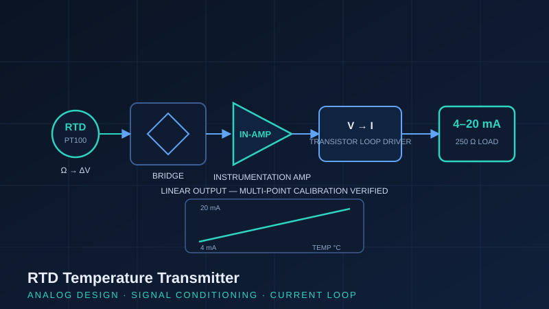

Project Case Study · Oct – Nov 2025
RTD Temperature Transmitter: 4–20 mA Signal Conditioning Circuit
A ground-up analog transmitter that converts the small resistance change of an RTD into the industry-standard 4–20 mA current loop signal: designed, built, and verified with multi-point calibration across the full temperature range.

Why 4–20 mA still matters
Despite decades of digital fieldbus development, the 4–20 mA current loop remains the backbone of process instrumentation: it is immune to voltage drop over long cable runs, inherently fault-indicating (0 mA means a broken loop, not a zero reading), and universally compatible with PLCs, DCSs, and indicators. Building a transmitter from discrete components (rather than buying one) forces a real understanding of every link in the measurement chain.
Signal chain design
- RTD sensing element: small, nearly linear resistance change with temperature, but a low-level signal that is easily corrupted by noise and lead resistance.
- Instrumentation amplifier: chosen for its high input impedance and common-mode rejection, accurately amplifying the low-level differential RTD signal while rejecting noise.
- Voltage-to-current conversion: a transistor-based loop driver converts the conditioned voltage into a proportional 4–20 mA loop current.
- 250 Ω load resistor: the standard receiver termination, converting loop current back to the familiar 1–5 V range for verification.
Calibration & verification
The transmitter was verified the way a real instrument is commissioned: multi-point measurement across the full temperature range, checking loop current at each point against the expected value and confirming linearity, zero (4 mA), and span (20 mA). Circuit behaviour was validated in Multisim simulation before committing to hardware.
What this demonstrates
Instrumentation fundamentals at the component level: signal conditioning, loop physics, and calibration discipline. When a transmitter misbehaves in the field, this is the understanding that makes troubleshooting systematic instead of guesswork.